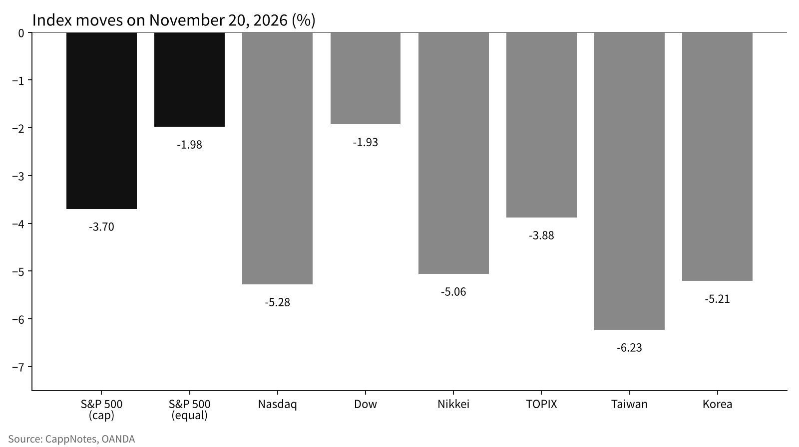
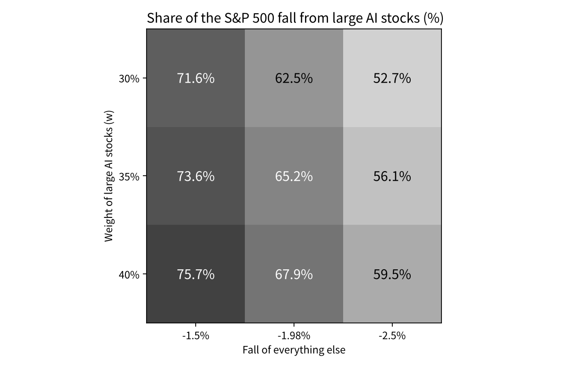

What triggered the November 2026 AI stock sell-off? Testing Nvidia's CEO resignation and disclosure probe, Anthropic's IPO and rate-hike bets
On November 20, 2026, the S&P 500 fell 3.70% for a seventh straight loss, and its 8.6% weekly drop was the largest since April 2025. The same day the Nikkei 225 fell 3,007 points (5.06%), and Taiwan's index lost 17.5% on the week [8].
At the center of the fall were large AI stocks, led by Nvidia. But there was more than one trigger.
The question of this article: how much of the sell-off came from concentration in large AI stocks, and what broke that concentration?

- Comparing the cap-weighted S&P 500 (−3.70%) with its equal-weight version (−1.98%), 53–76% of the drop came from large AI stocks.
- Three triggers overlapped: Nvidia's CEO resignation (Nov 12) and reports of a disclosure probe (Nov 17), Anthropic's record $81.3 billion IPO (Nov 19), and a 90%+ probability of a December rate hike.
- In Japan, the valuation loss on margin buying had already reached about −21%, so forced selling may have deepened the fall. The triggers came from the U.S., but the depth was set by leverage.
Question and background
Index crashes come in two kinds. In one, the whole market is sold at once. In the other, a few very large stocks are sold and drag the index down. The first usually reflects the economy or finance; the second reflects concentration.
By "concentration" I mean a state in which index moves depend heavily on a small number of very large companies. The S&P 500 is weighted by market value, so the bigger the company, the bigger its effect on the index.
An "equal-weight index" is calculated as if all the same 500 stocks were held in equal amounts. S&P Dow Jones Indices publishes it [3]. The gap between the two indexes shows whether large or small companies fell more.
The "margin valuation ratio" shows how large the unrealized gain or loss is on stocks bought with borrowed money and not yet settled. When it falls to around −20%, more investors face margin calls and are forced to sell, and that level has been treated as a sign of a bottom [11].
In November 2026, large AI stocks were sold from the start of the month. AI and chip stocks fell after the U.S. midterm elections on November 3, and on November 12 Nvidia CEO Jensen Huang resigned [9]. Eight days later, the U.S., Japan, Taiwan and Korea fell together.
In the same week, Anthropic listed on Nasdaq. It raised about $81.3 billion, the largest U.S. IPO ever [8]. A big listing pulls cash out of the market as investors sell other stocks to buy it. On its second day, November 20, Anthropic itself fell 8.50% to close at $88.91 [8].
Data and method
I use the November 20 moves of each index, the U.S. 10-year Treasury yield, the VIX (expected U.S. stock volatility), and the valuation ratio of Japanese margin buying. Index moves come from CappNotes [8], rates and the VIX from FRED [1][2], and margin data from Japan Exchange Group [7] and brokers [11][12].
I estimate the contribution of concentration as follows. I split the S&P 500's −3.70% into a group of large AI stocks (weight w) and everything else (weight 1−w). I assume everything else fell about as much as the equal-weight index (−1.98%).
The formula is: AI group contribution = −3.70% − (1−w) × (fall of everything else). Neither w nor the fall of everything else is published, so I move w across 30%, 35% and 40%, and the rest across −1.5%, −1.98% and −2.5%.
To identify the triggers, I line up the dates. I order each announcement and the market moves that followed, and check which events came before the fall. This checks order, not proof of cause.
The VIX is a forecast of how much the S&P 500 will move over the next 30 days, calculated from option prices [2]. The higher it is, the more investors fear large moves. It closed at 35.89 on November 20, the highest since late March [8].
Results
The chart below shows the main index moves on November 20. The biggest falls were the Nasdaq Composite (−5.28%), Taiwan (−6.23%), Korea (−5.21%) and the Nikkei (−5.06%) [8]. All are markets with heavy AI and chip weights.

By contrast, the equal-weight S&P 500 fell 1.98% and the Dow 1.93% [3][8]. Only consumer staples rose, but the depth of the fall split mostly by company size, not by sector.
The table below lines up the events by date.
| Date | Event | Source |
|---|---|---|
| Nov 3 | U.S. midterms. AI and chip stocks sold from the next day | [8] |
| Nov 12 | Nvidia CEO Jensen Huang resigns. CFO Colette Kress becomes interim CEO | [4][9] |
| Nov 13 | Report that Norinchukin Bank began buying chip-stock ETFs | [10] |
| Nov 17 | Report that the SEC is examining Nvidia's disclosures | [8] |
| Nov 19 | Nvidia earnings (revenue $115.8 billion) and Anthropic IPO (about $81.3 billion) | [4][8] |
| Nov 19 | U.S. 10-year yield briefly above 5.10% | [1] |
| Nov 20 | S&P 500 −3.70%, Nikkei −5.06%, VIX 35.89 | [2][8] |
The earnings were strong. Even so, Nvidia fell 14.01% on November 20 [8]. The fall can be read as a test of trust in leadership and disclosure, not of the numbers.
The fall spread beyond the U.S. Taiwan's index lost 17.5% on the week, which Bloomberg called its worst week since 1991 [8]. Markets with many chip factories and parts makers moved in the same direction as Nvidia.
In Tokyo, the Nikkei fell more than 800 points at the open, broke its November 6 low and closed at the day's low. Prime Market turnover swelled to about $54.0 billion; electrical machinery and nonferrous metals fell sharply while insurers and airlines rose [13].
Sensitivity analysis
I estimated what share of the S&P 500's fall came from the group of large AI stocks. The chart below shows the share for each combination of w and the fall of everything else.

In all nine cases, the AI group accounted for more than half. Under the central assumption (w = 35%, rest −1.98%) the share is about 65%, implying the large AI stocks fell about 6.9% in one day.
For Nvidia alone, assuming an index weight of 6–8%, its −14.01% fall pulled the S&P 500 down by 0.84–1.12 points. One company explains about 23–30% of the index's fall.
Discussion
There is an opposing view: the main cause was rates, not concentration. The probability of a hike at the December 9 FOMC meeting was reported at over 90%, and higher rates lower the value of growth stocks [6].
But on November 20, the U.S. 10-year yield fell 12 basis points to 4.92% [1][8]. Stocks crashed on a day rates fell, so rates alone struggle to explain that day.
Margin trading helps explain why Japan fell more than the U.S. The valuation ratio of margin buying had already reached −21.08% on November 6 [11]. On November 20, Matsui Securities' figure for its clients was −22.71% [12]. As losses grow, margin calls follow and forced selling appears.
There are limits. The weight of the AI group is an assumption, not a published figure, and using the equal-weight index for "everything else" is only an approximation. The tests are the index composition published in December and the FOMC minutes.
Another opposing view is that the AI business itself has stalled. But Nvidia's November 19 results showed revenue of $115.8 billion, above expectations [4][9]. The price broke before the business numbers did, so this fall looks closer to a reset of valuation than of the business.
Ordering by date has limits too. When events cluster in one week, their separate effects cannot be split. This article's conclusion stays within the claim that three triggers overlapped.
Conclusion
Between 53% and 76% of the November 2026 crash can be traced to concentration in large AI stocks. What broke that concentration was three things landing in the same week: Nvidia's leadership change and doubts about disclosure, cash drained by the largest IPO ever, and rate-hike expectations.
What set the depth of the fall was the degree of concentration and the amount bought with borrowed money.
Three numbers are worth watching next: whether the gap between equal-weight and cap-weighted indexes narrows, whether the margin valuation ratio recovers from the −20% range, and how rates move after the December 9 FOMC decision. If the gap narrows and the ratio recovers, the unwinding of concentration can be judged complete.
How I see it
I don't own a single chip stock. I expect the makers to end up on the surplus side once the AI investment phase ends. I hold companies that earn by using AI, plus quantum, banks and SpaceX.
This sell-off cut my account by 6.21% in a week. Even so, my only trade was adding 500 IonQ shares at a price I had set in advance. For long-term holders of actual shares, a crash is like an outlet sale. If you did not buy with borrowed money, nobody can force you to sell.
Bank stocks are being sold even though many expect rates to rise. I see that as a chance, but next week I will still move only on the conditions I have set. My next move is the day IonQ closes below $20.
References
- Federal Reserve Bank of St. Louis (FRED)「10-Year Treasury Constant Maturity Rate (DGS10)」 https://fred.stlouisfed.org/series/DGS10
- Federal Reserve Bank of St. Louis (FRED)「CBOE Volatility Index: VIX (VIXCLS)」 https://fred.stlouisfed.org/series/VIXCLS
- S&P Dow Jones Indices「S&P 500 Equal Weight Index」 https://www.spglobal.com/spdji/en/indices/equity/sp-500-equal-weight-index/
- NVIDIA Newsroom（決算発表・人事の発表） https://nvidianews.nvidia.com/
- U.S. SEC EDGAR「NVIDIA Corp（CIK 0001045810）の提出書類」 https://www.sec.gov/cgi-bin/browse-edgar?action=getcompany&CIK=0001045810&type=8-K
- Board of Governors of the Federal Reserve System「FOMC の日程と議事要旨」 https://www.federalreserve.gov/monetarypolicy/fomccalendars.htm
- 日本取引所グループ「信用取引残高等」 https://www.jpx.co.jp/markets/statistics-equities/margin/index.html
- CappNotes「Closing Look — Friday, November 20, 2026」 https://cappnotes.substack.com/p/closing-look-friday-november-20-2026
- ダイヤモンド・オンライン「エヌビディア、ジェンスン・フアン氏退任後初の決算」（2026年11月20日） https://diamond.jp/articles/-/403781
- 日本経済新聞「動いた農林中金、AI株を『底値買い』」（2026年11月13日） https://www.nikkei.com/article/DGXZQOUB109MD0Q6A111C2000000/
- moomoo「日米株底打ちはいつ？日経平均5%安」（2026年11月20日） https://www.moomoo.com/ja/community/feed/when-will-the-japanese-and-u-s-stock-markets-bottom-117647633154054
- 松井証券「信用残速報」（2026年11月20日） https://www.matsui.co.jp/market/
- OANDA証券「日経平均サマリー（20日）」（2026年11月20日） https://www.oanda.jp/lab-education/market_news/mn_1045088_202611201757/
Charts by YUKI CAPITAL. Photo: Unsplash
I record my daily numbers and decisions on X.